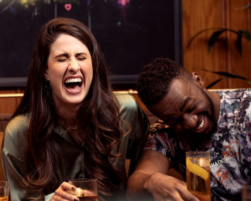

Once upon a time in San Francisco, Jacob and Emily discovered a shared passion for coffee. Their love for the rich aromas, intricate flavors, and sense of community sparked not only friendship but a blossoming romance. They spent countless hours exploring the city’s coffee scene, dreaming of one day opening their own shop.
Life led them to the charming city of Harrisburg, Pennsylvania, where they saw the perfect place to bring their dream to life. Inspired by their experiences, they created Brews & Bonds, a coffee shop that blends the warmth of community with the rich flavors they cherished, using locally sourced beans to craft every cup. From the first day, the aroma of freshly brewed coffee drew locals and travelers alike. The cozy, San Francisco–inspired interior became a welcoming space where friendships flourished. Jacob and Emily poured their hearts into every cup, building relationships and making everyone feel like family.
Today, Brews & Bonds stands as a testament to love, passion, and great coffee. Their journey reminds us that the perfect blend of dedication and heart can create something truly extraordinary.
Life led them to the charming city of Harrisburg, Pennsylvania, where they saw the perfect place to bring their dream to life. Inspired by their experiences, they created Brews & Bonds, a coffee shop that blends the warmth of community with the rich flavors they cherished, using locally sourced beans to craft every cup. From the first day, the aroma of freshly brewed coffee drew locals and travelers alike. The cozy, San Francisco–inspired interior became a welcoming space where friendships flourished. Jacob and Emily poured their hearts into every cup, building relationships and making everyone feel like family.
Today, Brews & Bonds stands as a testament to love, passion, and great coffee. Their journey reminds us that the perfect blend of dedication and heart can create something truly extraordinary.
